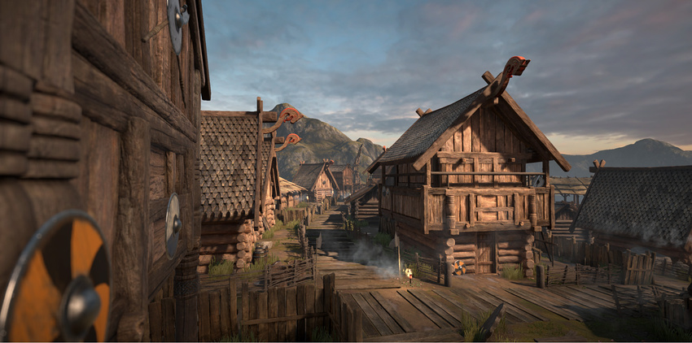
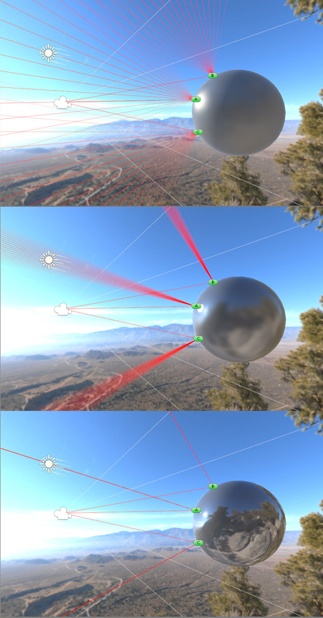

The Unity Standard Shader is a built-in shaderA small script that contains the mathematical calculations and algorithms for calculating the Color of each pixel rendered, based on the lighting input and the Material configuration. More info See in Glossary with a comprehensive set of features. It can be used to render “real-world” objects such as stone, wood, glass, plastic and metal, and supports a wide range of shader types and combinations. Its features are enabled or disabled by simply using or not using the various texture slots and parameters in the material editor.
The Standard Shader also incorporates an advanced lighting model called Physically Based Shading. Physically Based Shading (PBS) simulates the interactions between materials and light in a way that mimics reality. PBS has only recently become possible in real-time graphics. It works at its best in situations where lighting and materials need to exist together intuitively and realistically.
The idea behind our Physically Based Shader is to create a user-friendly way of achieving a consistent, plausible look under different lighting conditions. It models how light behaves in reality, without using multiple ad-hoc models that may or may not work. To do so, it follows principles of physics, including energy conservation (meaning that objects never reflect more light than they receive), Fresnel reflections (all surfaces become more reflective at grazing angles), and how surfaces occlude themselves (what is called Geometry Term), among others.
The Standard Shader is designed with hard surfaces in mind (also known as “architectural materials”), and can deal with most real-world materials like stone, glass, ceramics, brass, silver or rubber. It will even do a decent job with non-hard materials like skin, hair and cloth.

A scene rendered using the standard shader on all models
With the Standard Shader, a large range of shader types (such as Diffuse, Specular, Bumped Specular, Reflective) are combined into a single shader intended to be used across all material types. The benefit of this is that the same lighting calculations are used in all areas of your sceneA Scene contains the environments and menus of your game. Think of each unique Scene file as a unique level. In each Scene, you place your environments, obstacles, and decorations, essentially designing and building your game in pieces. More info See in Glossary, which gives a realistic, consistent and believable distribution of light and shade across all models that use the shader.
Terminology
There are a number of concepts that are very useful when talking about Physically Based Shading in Unity. These include:
Energy conservation - This is a physics-based concept that ensures objects never reflect more light than they receive. The more specular a material is, the less diffuse it should be; the smoother a surface is, the stronger and smaller the highlight gets.

The light rendered at each point on a surface is calculated to be the same as the amout of light received from its environment. The microfacets of rough surfaces are affected by light from a wider area. Smoother surfaces give stronger and smaller highlights. Point A reflects light from the source towards the camera. Point B takes on a blue tint from ambient light from the sky. Point C takes its ambient and reflective lighting from the surrounding ground colours.
High Dynamic Range (HDR) - This refers to colours outside the usual 0–1 range. For instance, the sun can easily be ten times brighter than a blue sky. For an in-depth discussion, see the Unity Manual HDRhigh dymanic range See in Glossary page.
A scene using High Dynamic Range. The sunlight reflecting in the car window appears far brighter than other objects in the scene, because it has been processed using HDR
Did you find this page useful? Please give it a rating:
Is something described here not working as you expect it to? It might be a Known Issue. Please check with the Issue Tracker at issuetracker.unity3d.com.
Thanks for letting us know! This page has been marked for review based on your feedback.
If you have time, you can provide more information to help us fix the problem faster.
You've told us this page needs code samples. If you'd like to help us further, you could provide a code sample, or tell us about what kind of code sample you'd like to see:
You've told us there are code samples on this page which don't work. If you know how to fix it, or have something better we could use instead, please let us know:
You've told us there is information missing from this page. Please tell us more about what's missing:
You've told us there is incorrect information on this page. If you know what we should change to make it correct, please tell us:
You've told us this page has unclear or confusing information. Please tell us more about what you found unclear or confusing, or let us know how we could make it clearer:
You've told us there is a spelling or grammar error on this page. Please tell us what's wrong:
You've told us this page has a problem. Please tell us more about what's wrong:
Thanks for helping to make the Unity documentation better!